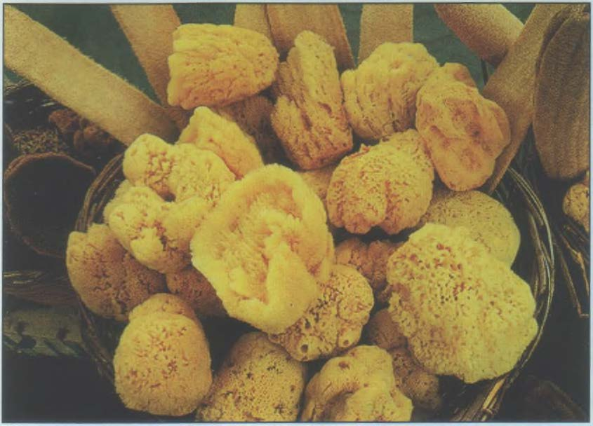
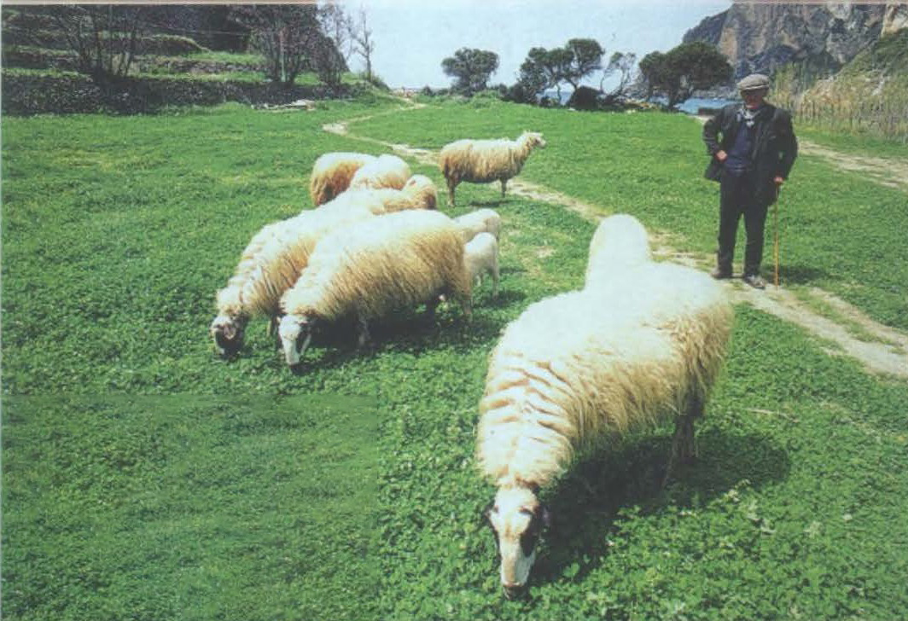

В далёком прошлом основу естественного растительного покрова составляли лиственные массивы из различных видов дуба и кипариса, а в горах шумели сосновые леса. В значительной мере они были вырублены ещё в древности, а их место заняли пастбища,
виноградники и оливковые рощи. На заброшенных зем- ледельцами участках появлялись древеснокустарниковые заросли — маквисы, состоящие из карликового дуба, ладанника, мир та, можжевельника, древовидного вереска, розмарина и других
травянистых растений. Кое-где растут завезённые из Америки опунции и агавы. В настоящее время леса (часто это молодые рощицы низкорослых деревьев) занимают ок. 20% территории страны. Первичный высокоствольный лес сохранился лишь кое-где
на северо-западе Греции, занимая не более 2,6% территории. Существенно изменился и видовой состав животного мира — наибольшее разнообра зие отмечается в приграничных с Албанией и Македонией районах, где всё ещё водятся бурые медведи,
волки и шакалы, а высоко в горах гнездится беркут, белоголовый сип и сокол-сапсан.

Истоки греческой государственности восходят ко II тысячелетию до и. э. Древнейшими центрами Эллады были Микены и Тиринф. Примерно с 1200 г. до н. э. началось формирование полисов (городов-государств с подчинёнными им колониями). Греческая
колонизация (VIII—VI вв. до н.э.) охватила всю Южную Италию, Фракию, Малую Азию и Черноморское побережье. В VI в. до н. э. началось возвышение Афин и Спарты. На заре V в. до и. э. победы, одержанные в греко-персидских войнах, укрепили
гегемонию Афин, что не могло не встревожить Спарту, приведя к конфликту между соперничающими полисами. Противостояние переросло в Пелопоннесскую войну, в которой Афины потерпели поражение, и во главе греческих городов встала Спарта.
Внутренние раздоры ослабили Грецию, и вскоре она вошла в состав Македонского царства. Последний период расцвета Греция пережила при Александре Македонском, завоевания которого способствовали распространению греческой культуры по всему
Ближнему и Среднему Востоку. В 146 г. дон. э. Греция стала провинцией Римской империи, после распада которой вошла в состав Византии.
В XIV—XV вв. греческие земли шаг за шагом захватили турки-османы. Вновь страна обрела независимость только в 1830 г., после продолжавшейся 9 лет национально-освободительной революции. Границы и государственное устройство новой Греции
определила Лондонская конференция. Страна стала сначала монархией, затем конституционной (1843 г.) и, наконец, парламентской монархией (1864 г.). В начале XX в. Греция участвовала в Балканских войнах и 1 мировой войне, а в 1924 г. была
провозглашена республикой. В годы II мировой войны Грецию оккупировали итало-германские войска. После освобождения (1944 г.) в стране разразилась гражданская война (1946—49 гг.), победу в которой одержали антикоммунисты. В 1950-х гг.
Греция, Великобритания и Турция вели спор за государственную принадлежность Кипра, который завершился превращением острова в суверенное государство. Греция является членом НАТО (с 1952 г.), ЕЭС (с 1962 г. ассоциированный, с 1981
г. полноправный член)и Европейского Союза (с 1993 г.).
Подавляющее большинство (95,5%) населения Греции составляют этнические греки. Среди самых многочисленных национальных меньшинств — македонцы, турки, албанцы и болгары. Почти всё население страны принадлежит к греческой православной церкви
(98%). Естественный прирост населения не превышает 0,2% в год
СЕЛЬСКОЕ ХОЗЯЙСТВО И ПРОМЫШЛЕННОСТЬ

Экономика Греции до недавнего времени зиждилась на сельском хозяйстве, и хотя в наши дни оно сдаёт свои позиции в пользу промышленности и сферы услуг, связанной с туристическим бизнесом, его роль всё ещё велика. В целях повышения урожайности
орошается свыше 3 пахотных угодий. В масштабах всей страны почтиг только рыбы и других даров моря, но и губок 90% потребляемой воды иcпользуется для орошения. Основные культуры: виноград, оливки, цитрусовые, инжир, а также табак, хлопок,
пшеница, ячмень и кукуруза. Важной отраслью экономики издавна является животноводство.
Разводят в основном овец и коз, меньше — коров и свиней. Раскинувшаяся на тысячах островов Греция активно эксплуатирует морские богатства. В стране ведётся интенсивный лов рыбы, осьминогов и губок. Ведущее место в индустрии занимает переработка
местной аграрной продукции. Повсюду действуют винодельни, маслобойни и консервные предприятия. Развиваются текстильная и хлопкопрядильная отрасли. Меньшее значение имеет добывающая (добыча бокситов, железных руд, цинка, свинца и бурого
угля) и тяжёлая индустрия. В энергетическом секторе ведущее место занимает гидроэнергетика. Будучи страной т. н. «дешёвого флага», Греция имеет один из крупнейших в мире торговых флотов. Общий тоннаж торговых судов, зарегистрированных
в греческих портах, составляет ок. 42 млн т (3-е место в мире). Главные порты: Пирей, Салоники, Патры и Волос.
Мягкий климат и обилие памятников древности делают Грецию весьма привлекательной для туристов. Ежегодно в страну приезжает ок. 11 млн иностранцев, главным образом из ФРГ, Великобритании и США. Доходы казны от туризма составляют почти 4 млрд
долларов в год. Основные туристические потоки направляются в Афины, на п-ов Халкидики и острова Эгейского моря, в т. ч. Лемнос, Кос, Родос, а также лежащий в Средиземном море Крит. В центральные и северные районы Греции туристы заглядывают
гораздо реже. Охраняемые территории составляют лишь 0,8% площади страны и сосредоточены на северо-западе. В 1971 г. на заболоченных берегах мелководного озера Малая Преспа был создан одноимённый национальный парк. Расположенное в плоской
котловине на границе с Албанией озеро площадью 44 км2 (греческая часть —42 км2) зимой и весной заполняется дождевой водой и заливает окрестные луга, а его труднодоступные берега служат прекрасным местом гнездования для одной из крупнейших
в Европе популяций пернатых (цапли, бакланы, колпицы, ибисы, выпи, большие пеликаны)